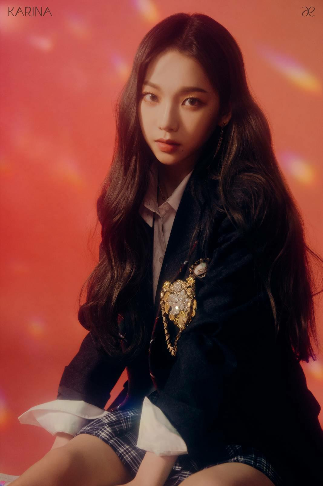

Karina (Yoo Ji Min)
Brithday
April 11 2000 (Korean)
Hight
167-168 cm
Blood Typr
B
Position
Leader, Main Dancer, Lead Rapper, Sub Vocalist, Face Of The Group
April 11 2000 (Korean)
167-168 cm
B
Leader, Main Dancer, Lead Rapper, Sub Vocalist, Face Of The Group